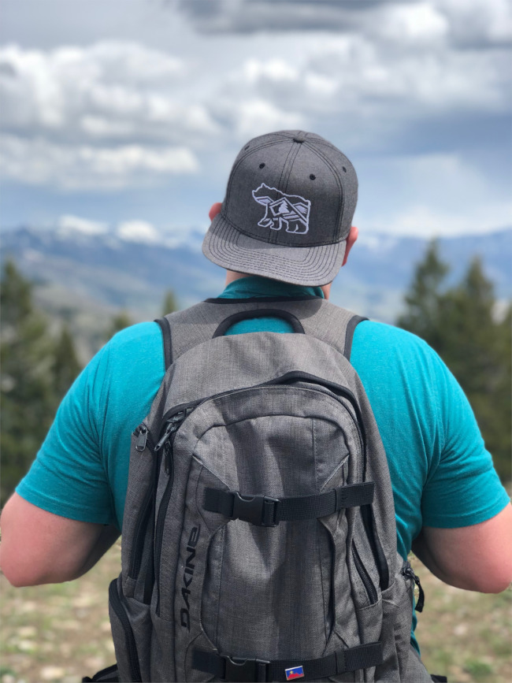
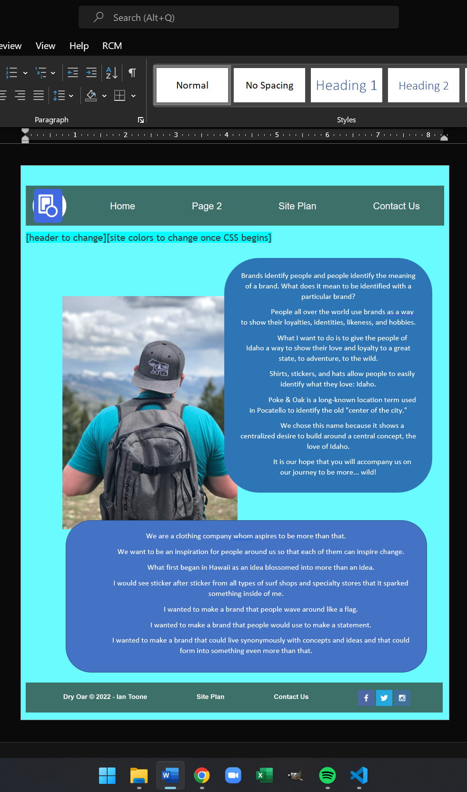
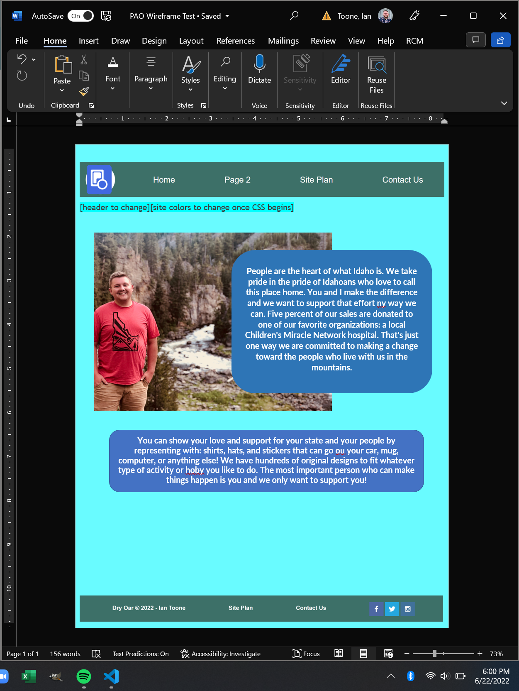
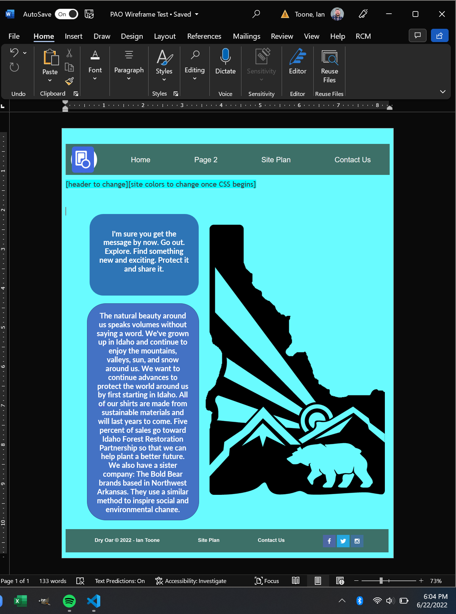

Overview
Purpose
Notice to the professor: This has changed and my website focus has changed to be more of a shop-type site.
Brands identify people and people identify the meaning of a brand. What does it mean to be identified with a particular brand? People all over the world use brands as a way to show their loyalties, identities, likeness, and hobbies. What I want to do is to give the people of Idaho a way to show their love and loyalty to a great state, to adventure, to the wild. Shirts, stickers, and hats allow people to easily identify what they love: Idaho. Poke & Oak is a long-known location term used in Pocatello to identify the old "center of the city." We chose this name because it shows a centralized desire to build around a centeral concept, the love of Idaho. It is our hope that you will accompany us on our journey to be more... wild!
Audience
My audience is defined by those who are willing to show that they love the state of Idaho and all that entails.
Branding
Website Logo

Style Guide
Color Palette
Palette URL: https://coolors.co/0067a0-00a6ff-a4dbe8-d0d3d4-7c878e| Primary | Secondary | Accent 1 | Accent 2 |
|---|---|---|---|
| [#0067A0] | [#00A6FF] | [#A4DBE8] | [#D0D3D4] |
Typography
Heading Font: [Font Name here]
Paragraph Font: [Font Name here]
Normal paragraph example
I mua haumāna! Let us go forward I mua haumāna! Break through the doubt. I mua haumāna! Let us go forward Stand with me, let us be strong He Hawai‘i au, mau a mau. I mua! I mua! I mua Kamehameha ē, A lanakila ‘oe Paio, paio like mau, I ola kou inoa, Ka wā nei hō‘ike a‘e ‘oe, ‘A‘ohe lua ou E lawe lilo ka ha‘aheo No Kamehameha ē
Colored paragraph example
I mua haumāna! Let us go forward I mua haumāna! Break through the doubt. I mua haumāna! Let us go forward Stand with me, let us be strong He Hawai‘i au, mau a mau. I mua! I mua! I mua Kamehameha ē, A lanakila ‘oe Paio, paio like mau, I ola kou inoa, Ka wā nei hō‘ike a‘e ‘oe, ‘A‘ohe lua ou E lawe lilo ka ha‘aheo No Kamehameha ē
Navigation
Site Map
Content
Home page
About Us
Brands identify people and people identify the meaning of a brand. What does it mean to be identified with a particular brand? People all over the world use brands as a way to show their loyalties, identities, likeness, and hobbies. What I want to do is to give the people of Idaho a way to show their love and loyalty to a great state, to adventure, to the wild. Shirts, stickers, and hats allow people to easily identify what they love: Idaho. Poke & Oak is a long-known location term used in Pocatello to identify the old "center of the city." We chose this name because it shows a centralized desire to build around a central concept, the love of Idaho. It is our hope that you will accompany us on our journey to be more... wild!
We are a clothing company whom aspires to be more than that. We want to be an inspiration for people around us so that each of them can inspire change. What first began in Hawaii as an idea blossomed into more than an idea. I would see sticker after sticker from all types of surf shops and specialty stores that it sparked something inside of me. I wanted to make a brand that people wave around like a flag. I wanted to make a brand that people would use to make a statement. I wanted to make a brand that could live synonymously with concepts and ideas and that could form into something even more than that. These ideas formed into Poky Idaho brands in Pocatello, Idaho (which is where these images are from). This once existed as an idea for a creative outlet, which it still is, but now it offers something a little bit different. We feel the brand has grown to encompass a sense of charity, which will be expounded upon in the next few pages.
Images for the Home page
People
You
People are the heart of what Idaho is. We take pride in the pride of Idahoans who love to call this place home. You and I make the difference and we want to support that effort ny way we can. Five percent of our sales are donated to one of our favorite organizations: a local Children's Miracle Network hospital. That's just one way we are committed to making a change toward the people who live with us in the mountains.
What We Offer
You can show your love and support for your state and your people by representing with: shirts, hats, and stickers that can go ou your car, mug, computer, or anything else! We have hundreds of original designs to fit whatever type of activity or hoby you like to do. The most important person who can make things happen is you and we only want to support you!
Images for the Page 2

The Wild
You
I'm sure you get the message by now. Go out. Explore. Find soemthing new and exciting. Protect it and share it.
Efforts
The natural beauty around us speaks volumes without saying a word. We've grown up in Idaho and continue to enjoy the mountains, valleys, sun, and snow around us. We want to continue advances to protect the world around us by first starting in Idaho. All of our shirts are made from sustainable materials and will last years to come. Five percent of sales go toward Idaho Forest Restoration Partnership so that we can help plant a better future. We also have a sister company: The Bold Bear brands based in Northwest Arkansas. They use a similar method to inspire social and environmental change.
Images for the Page 3
Wireframes
Create three wireframes for your site. One for each page and list them here
Home
[Any additional details about home that the wireframe does not make clear]
People
[Any additional details about page 2 that the wireframe does not make clear]
The Wild
[Any additional details about page 3 that the wireframe does not make clear]
